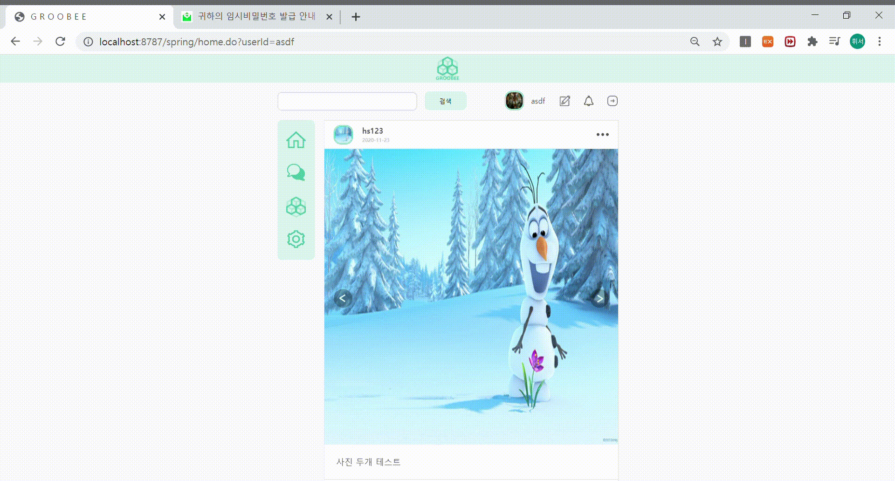
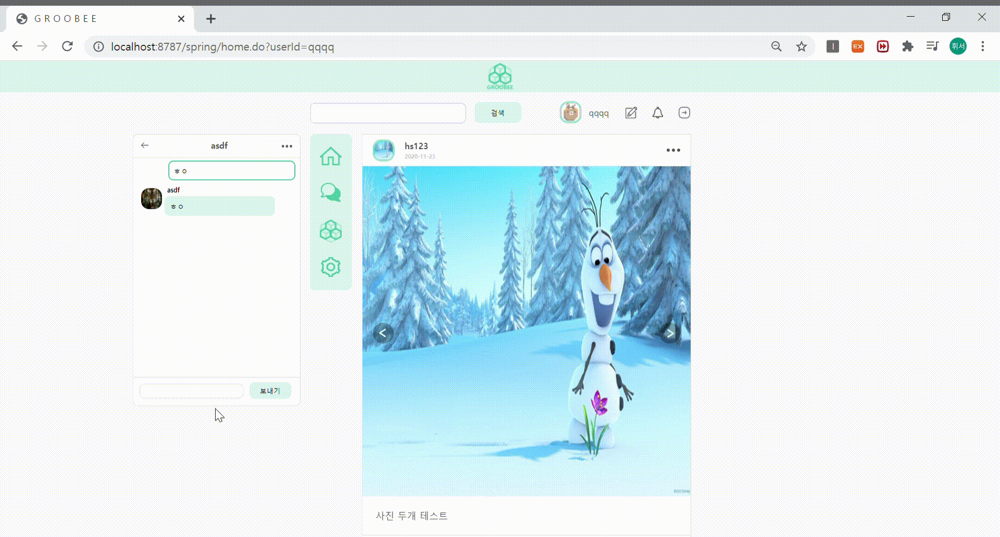
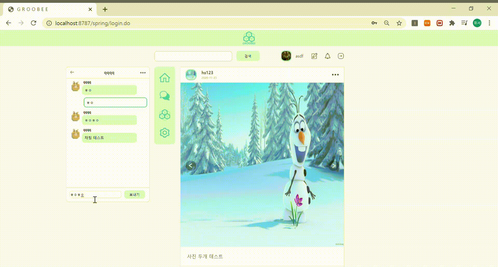
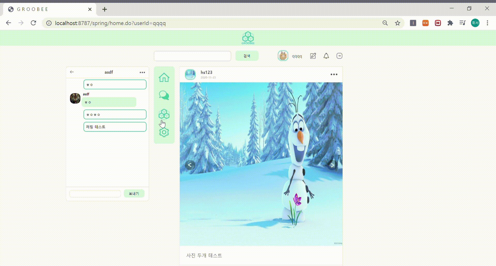
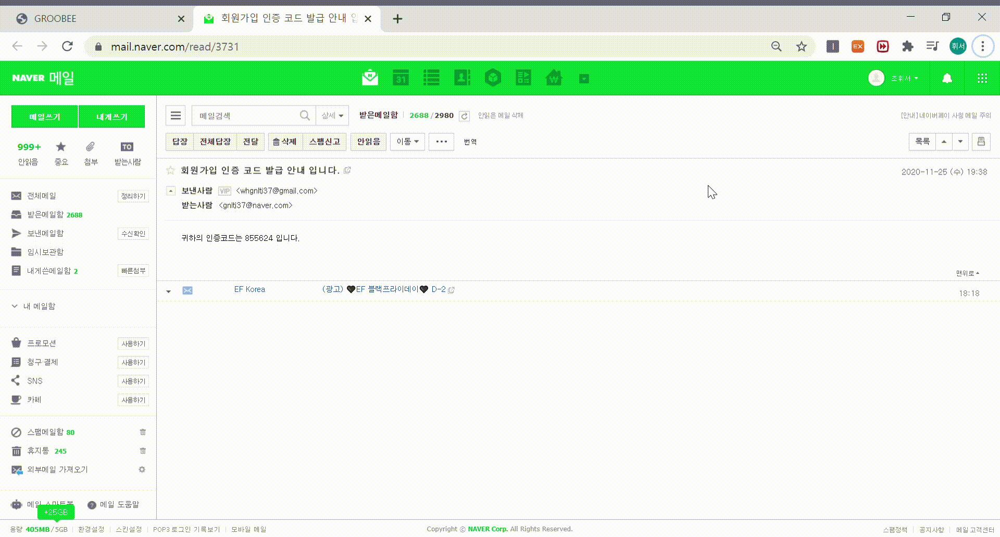
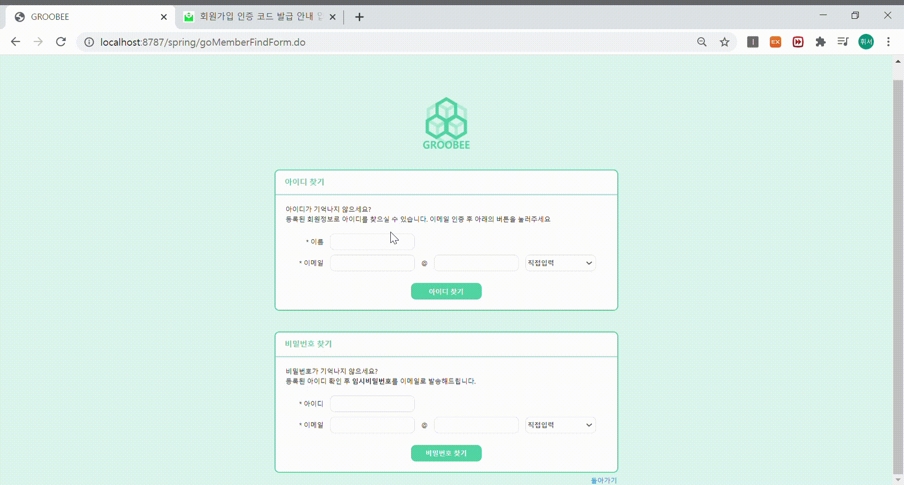
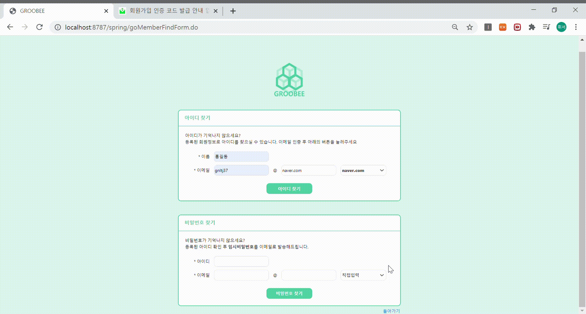
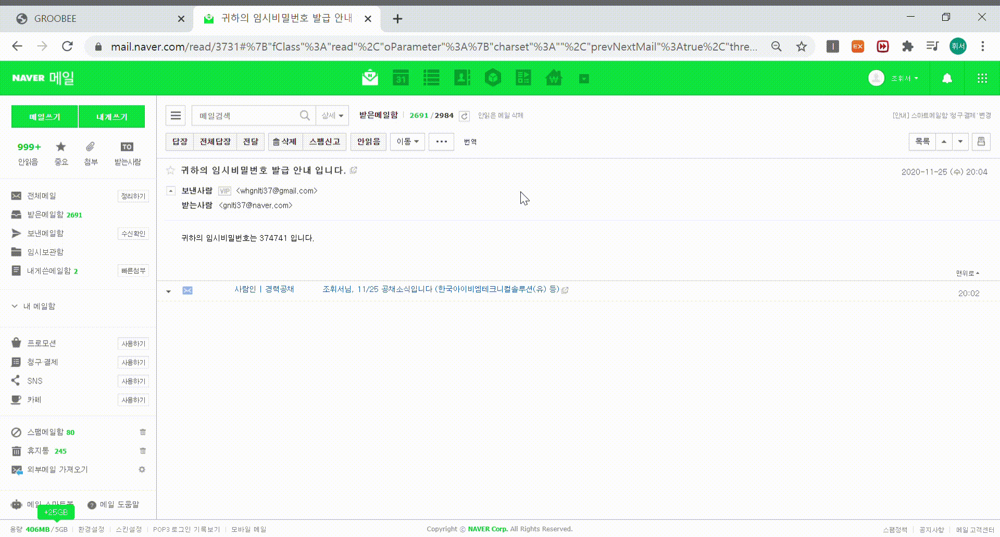

PORTFOLIO
Web Developer
조휘서
Info
- Introduce
‘가장 뜨거운 불에서 가장 강한 강철이 나온다.’
‘쇠는 두드릴수록 단단해진다.’
제가 가장 좋아하는 명언과 속담입니다. 이처럼 아무리 힘들고 어려운 때가 와도 끊임없이
도전하며 성장하는 개발자가 될 것입니다. 입사하게 되면 분명히 모르는 부분도 있고 이해하지 못하는
부분도 있을 것입니다. 이러한 새로운 부분에 두려워하지 않고 계속해서 공부하고 제 것으로 만들 것이며
이미 익숙한 로직, 알고리즘만 생각하지 않고 이를 응용하여 더욱 좋은 코드를 작성할 수 있도록 할 것입니다.
- Experiences
KH정보교육원(스마트 콘텐츠 융합 응용SW 엔지니어 양성과정(5))
2020.05.07~2020.12.08
HTML/CSS/JavaScript를 통한 UI 설계 및 구현과 JAVA 기초부터 JSP/Servlet, DB(Oracle) 설계 및 구현을 통한 웹 어플리케이션의 전반적인 이론과 실무에 관한 교육을 프로젝트 기간을 포함하여 7개월간의 교육과정을 이수하였습니다.
한국방송통신대학교 컴퓨터과학과(휴학)
2020.03~진행중
개발자가 되기로 마음의 결정을 내린 후 지식을 쌓기 위해 한국방송통신대학교 컴퓨터과학과에 입학하였습니다. 1학년 1학기를 다닌 상태이고 학원의 교육과정과 병행하다 보니 두 가지 모두 모호해질것 같아 한 가지를 확실히 하기 위해 휴학을 신청했고 2021년에 복학예정입니다.
Skill
JAVA(8 ver)
신입 개발자로서 자바 기초에 대한 부분들을 인지하고 활용할 수 있으며 Java기반으로 웹페이지를 구현할 수 있습니다.
HTML5/CSS3/JavaScript(JQuery)
웹 페이지에서 원하는 UI를 구현할 수 있습니다.
HTML5를 바탕으로 만들어진 틀에 CSS3를 적용할 수 있습니다.
웹페이지에서 기능에 맞게 이벤트를 설정할 수 있습니다.(제이쿼리의 문법을 잘 이해하고 있고 활용할 수 있습니다.)
Ajax
Ajax를 통한 비동기통신을 활용하여 웹페이지를 구현할 수 있습니다.
Oracle(DB)
기본적인 SQL문법들을 이해하고 있고 Oracle만의 문법 또한 이해하며 활용할 수 있습니다.
JSP/Servlet
JSP에서 HTML코드 및 EL 등을 활용하여 웹페이지를 구현할 수 있습니다.
Servlet을 이용하여 클라이언트와 서버간의 요청 및 응답에 대한 값을 전달할 수 있습니다.
Spring-Framework
기본적인 초기 설정값 부터 웹페이지 구현까지 흐름을 이해하고 있고 웹페이지를 구현할 수 있습니다.
MyBatis
MyBatis를 이용하여 JDBC연결 및 동적쿼리 사용도 가능합니다
Groobee
- 프로젝트명
그루비(Groobee)
- Github
https://github.com/unimik/finalGroobee
- 수행기간
2020.10.26~2020.11.29
- 개발 목표
일상 공유나 모임을 통해 소통하는 소셜 네트워크 서비스(SNS)
- 개발 환경
| 운영체제 | Windows OS |
| 개발도구 | Eclipse, Visual Studio Code |
| DBMS | Oracle DB - SqlDeveloper |
| Server | Apache Tomcat8.5 |
| Language | JAVA(8ver), HTML5/CSS3, JavaScript(JQuery), JSP/Servlet |
- 사용해본 대표 기술
BOOKTIFULMUSIC
- 프로젝트명
북티풀뮤직(BOOKTIFULMUSIC)
- Github
https://github.com/BOOKTIFULMUSIC/
BOOKTIFULMUSIC
- 수행기간
2020.07.27~2020.09.07
- 개발 목표
도서 판매와 음원 스트리밍을 동시에 할 수 있는 웹 사이트 구축
- 개발 환경
| 운영체제 | Windows OS |
| 개발도구 | Eclipse, Visual Studio Code |
| DBMS | Oracle DB - SqlDeveloper |
| Server | Apache Tomcat8.5 |
| Language | JAVA(8ver), HTML5/CSS3, JavaScript(JQuery), JSP/Servlet |
- 사용해본 대표 기술
- 담당 역할
(기여도 15% - 7명)
● Index 페이지
- 로그인을 할 수 있는 화면 구현
- Spring Security를 이용하여 암호화 처리
- 회원가입, 아이디/비밀번호 찾기 페이지
- 회원가입은 이메일을 통해 인증
- 아이디 찾기는 회원가입시 작성한 이름, 이메일 주소를 통해 찾기 가능
- 비밀번호는 아이디, 이메일 주소를 입력하여 입력한 이메일 주소로 임 시비밀번호 전송
● 메인 페이지
- 로그인 후 이동하는 페이지
- 피드 스크롤바 맨위로 올리는 버튼 구현
- 로그아웃 구현
● 채팅 페이지
- Spring-WebSocket, SockJS, Handler, Interceptor를 이용하여 로그인한 아이디 정보를 기반으로 실시간 채팅 구현
- 메뉴의 채팅 아이콘 클릭 시 보일 수 있게 구현
- 실시간 채팅으로 구현
- 일대일과 그룹채팅으로 구분
- 일대일 채팅(채팅방 생성, 채팅, 채팅방 나기기,)
- 그룹 채팅(채팅방 생성, 채팅, 채팅상대 추가, 채팅방 나가기)
- 채팅 내용을 불러올 때 20개 씩 불러오고 스크롤을 맨위로 올리면 20개씩 더 가져오도록 구현
- DB 설계

- 기능 시연 영상
1. 채팅
- 채팅방 생성
- 일대일 채팅

- 채팅방 나가기
2. 회원가입


3. 아이디 찾기
4. 비밀번호 찾기
